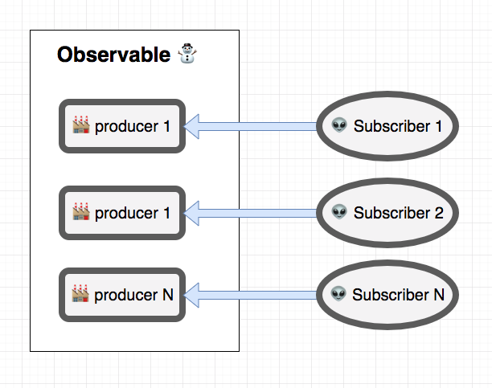
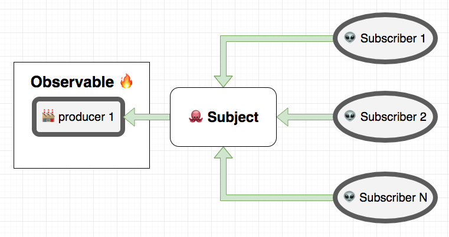

RxJS
Stanislav Dolgachov
About me
- Stanislav Dolgachov
- Senior software engineer
- 3+ years of production experience
- 5 projects
Agenda
Lecture ~40-50 minutes
Questions after sections
Q & A
RxJS overview
Observable creation
Observable it is "just a function"
ExampleSummary:
- observer.next(...), observer.error(...), observer.complete()
- Observable is just a function that takes an observer and returns a function
- 3 callbacks in a subscribe method or a Subject instance
- Returned function is called when an observable is destroyed
- To complete an observable - subscription.unsubscribe() & observer.complete();
Some create methods
- .of({})
- .interval([milliseconds])
- .timer([milliseconds])
- .throw(new Error('error'))
- .empty()
- .never()
- .from([1, 2, 3])
Error handling operators:
Promise vs Observable
ComparisonMain differences
- 1. Observable is not created when there are no subscribers
- 2. Observable could be reused (Is be recreated for new subscriber)
- 3. Observable could be synchronous
Array vs Rx
ComparisonCombine observables
Hot🔥 & Cold⛄ observables
- An observables is cold if the producer is created whenever an observer subscribes to the observable
- An observable is hot if the producer is not created each time an observer subscribes to the observable.
Cold⛄
Subject
Observable methods
- .subscribe()
- .map()
- ...
+
Observer methods
- .next()
- .error()
- .complete()
!!! It is not reusable after .error() or .complete() calls
Subject
exampleSubject types
- Subject
- ReplaySubject
- BehaviorSubject
- AsyncSubject
Hot🔥
Cold⛄ ➡ Hot🔥
- .multicast() + new Subject() + .connect()
- .multicast() + () => new Subject() + .refCount()
- .multicast() + new Subject() === .publish()
- .multicast() + () => new Subject() + .refCount() === .share()
Unit testing
Thank you
Questions?
Links:
- Learning observable by building one
- On The Subject Of Subjects (in RxJS)
- Angular/RxJs When should I unsubscribe from `Subscription`
- RxJS — Reduce Angular app bundle size using lettable operators
- Hot vs Cold Observables
- RxJS: Understanding the publish and share Operators
- My examples part 1
- My examples part 2
- Unit testing example